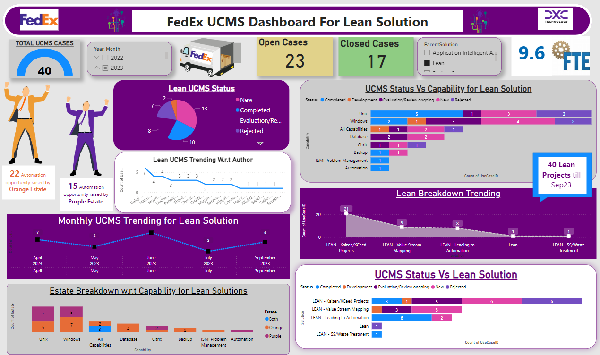

It is an illustration of the sequential activities (both value-added and non-value added) that an organization undertakes to deliver the customer request or needs. Its essentially a planning tool to optimize results by eliminating waste.

XCeeD program is to deliver Continual Improvement services that enable the Business to exceed (customer) expectations, exceed in quality, delivery and customer experience.